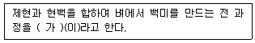
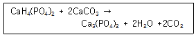
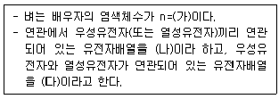
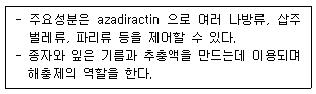
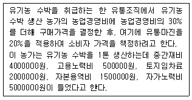

유기농업기사 (2020-06-06 기출문제)
1과목: 재배원론
1. 작물 수량 삼각형에서 수량증대 극대화를 위한 요인으로 가장 거리가 먼 것은?
- 유전성
- 재배기술
- 환경조건
- 원산지
(정답률: 88%)

2. 다음 중 산성토양에 적응성이 가장 강한 것은?
- 부추
- 시금치
- 콩
- 감자
(정답률: 61%)
3. 다음 중 병에서 장해형 냉해를 가장 받기 쉬운 생육시기는?
- 묘대기
- 최고분열기
- 감수분열기
- 출수기
(정답률: 78%)
4. 작물의 기원지가 중국지역인 것으로만 나열된 것은?
- 조, 피
- 참깨, 벼
- 완두, 삼
- 옥수수, 고구마
(정답률: 79%)
5. 벼의 수량구성요소로 가장 옳은 것은?
- 단위면적당 수수×1수영화수×등숙비율×1립중
- 식물체 수×입모율×등숙비율×1립중
- 감수분열기 기간×1수영화수×식물체 수×1립중
- 1수영화수×등숙비율×식물체 수
(정답률: 85%)
6. 작물의 영양기관에 대한 분류가 잘못된 것은?
- 인경-마늘
- 괴근-고구마
- 구경-감자
- 지하경-생강
(정답률: 63%)
7. 박과 채소류 접목의 특징으로 가장 거리가 먼 것은?
- 당도가 증가한다.
- 기형과가 많이 발생한다.
- 흰가루병에 약하다.
- 흡비력이 강해진다.
(정답률: 67%)
8. 목초의 하고(夏枯) 유인과 가장 거리가 먼 것은?
- 고온
- 건조
- 잡초
- 단일
(정답률: 65%)
9. 고립상태일 때 광포화점이 가장 높은 것은?
- 감자
- 옥수수
- 강낭콩
- 귀리
(정답률: 83%)
10. 용도에 따른 분류에서 공예작물이며, 전분작물로만 나열된 것은?
- 고구마, 감자
- 사탕무, 유채
- 사탕수수, 왕골
- 삼, 닥나무
(정답률: 65%)
11. 다음 중 내염성 정도가 가장 강한 것은?
- 완두
- 고구마
- 유채
- 감자
(정답률: 76%)
12. 다음 중 작물의 요수량이 가장 작은 것은?
- 호박
- 옥수수
- 클로버
- 완두
(정답률: 57%)
13. 감온형에 해당하는 작물은?
- 벼 만생종
- 그루조
- 올콩
- 가을메밀
(정답률: 70%)
14. 작물의 특징에 대한 설명으로 가장 거리가 먼 것은?
- 이용성과 경제성이 높아야 한다.
- 일반적인 작물의 이용 목적은 식물체의 특정부위가 아닌 식물체 전체이다.
- 작물은 대부분 일종의 기형식물에 해당된다.
- 야생식물보다 일반적으로 생존력이 약하다.
(정답률: 71%)
15. 콩의 초형에서 수광태세가 좋아지고 밀식적응성이 커지는 조건으로 가장 거리가 먼 것은?
- 잎자루가 짧고 일어선다
- 도복이 안 되며, 가지가 짧다.
- 꼬투리가 원줄기에 적게 달린다.
- 잎이 작고 가늘다.
(정답률: 66%)
16. 다음 중 중일성 식물은?
- 코스모스
- 토마토
- 나팔꽃
- 시금치
(정답률: 71%)
17. 다음 중 비료를 엽면시비할 때 흡수가 가장 잘되는 조건은?
- 미산성 용액 살포
- 밤에 살포
- 잎의 표면에 살포
- 하위 잎에 살포
(정답률: 59%)
18. (가)에 알맞은 내용은?

- 지대
- 마대
- 도정
- 수확
(정답률: 80%)
19. 다음 중 합성된 옥신은?
- IAA
- NAA
- IAN
- PAA
(정답률: 50%)
20. 다음 중 파종 시 작물의 복토깊이가 0.5∼1.0cm에 해당하는 것은?
- 고추
- 감자
- 토란
- 생강
(정답률: 65%)
2과목: 토양비옥도 및 관리
21. 아래 반응에 따른 직접적인 결과로 옳은 것은?

- 토양의 산성화
- 가용성 인산의 감소
- 인산 용탈에 의한 손실 증가
- 이산화탄소 발생에 따른 작물 피해
(정답률: 48%)
22. 다음 중 정적토에 해당하는 것은?
- 이탄토
- 붕적토
- 수적토
- 선상퇴토
(정답률: 70%)
23. 식초산석회와 같은 약산의 염으로 용출되는 수소이온에 기인한 토양의 산성을 무엇이라 하는가?
- 활산성
- 가수산성
- 치환산성
- 잔류산성
(정답률: 45%)
24. 토양유기물의 기능으로 옳지 않은 것은?
- 토양의 보수력을 감소시킨다.
- 토양의 입단화를 향상시킨다.
- 토양의 양이온교환용량(CEC)을 증가시킨다.
- 식물의 생육에 필요한 영양분을 공급해준다.
(정답률: 79%)
25. 양분공급량이 증가함에 따라 작물의 수확량이 증가하지만 어느 정도에 도달하면 일정해지고 그 한계를 넘으면 수확량이 다시 점차 증가하는 현상을 일컫는 말은?
- 우세의 원리
- 울프의 법칙
- 보수점감의 법칙
- 최소흡수의 법칙
(정답률: 62%)
26. 시설재배지 토양의 염류경감 방법으로 적당하지 않은 것은?
- 담수
- 제염작물재배
- 심토반전. 환토, 성토, 객토
- 작물별 노지 표준시비량에 따른 시비
(정답률: 63%)
27. 탄소함량이 40%이고, 질소함량이 0.5%인 볏짚 100kg을, C/N율이 10이고, 탄소동화율이 30%인 미생물이 분해시킬 때 식물이 질소기아를 나타내지 않게 하려면 몇 kg의 질소를 가하여 주어야 하는가?
- 0.1kg
- 0.3kg
- 0.5kg
- 0.7kg
(정답률: 37%)
28. 토양의 pH가 5일 때 토양용액 중에 가장 많이 존재하는 인의 형태는?
- H3PO4
- HPO42-
- H2PO4-
- PO43-
(정답률: 48%)
29. 토양의 유기물 유지방법 또는 그 필요성에 대한 설명으로 옳지 않은 것은?
- 토양에 가해진 퇴비는 그 전량이 부식물질이 된다.
- 유기물을 시용할 때 밭토양은 논토양보다 유기물의 분해가 왕성하다는 것을 고려해야 한다.
- 필요 이상으로 땅을 갈지 말아야 한다.
- 토양으로부터 식물의 유체를 제거하지 않고 동물의 분묘나 퇴비 등을 꾸준히 첨가하여야 한다.
(정답률: 64%)
30. 균근의 기능이 아닌 것은?
- 한발에 대한 저항성 증가
- 인산의 흡수 증가
- 토양의 입단화 촉진
- 식물체에 탄수화물 공급
(정답률: 69%)
31. 총수분퍼텐셜이 -0.1MPa로 동일하다면 토양의 중량수분함량이 가장 많은 토양은
- 식토
- 사양토
- 사질 식양토
- 미사질 양토
(정답률: 66%)
32. 환원조건에서 탈질과정으로부터 자유로운 질소 화합물 형태는?
- NO3-
- NH4+
- NO2-
- NO
(정답률: 50%)
33. 건조한 토양 1000g에 Ca2+, 2cmolc/kg이 치환위치에 있다면 가장 효과적으로 치환할 수 있는 조건을 가진 물질과 농도는 다음 중 어떤 것인가?
- Al3+, 1 cmolc/kg
- Mg2+, 2cmolc/kg
- Na+, 1 cmolc/kg
- K+, 2 cmolc/kg
(정답률: 59%)
34. 석회물질과 혼영하여도 문제가 없는 비료는?
- (NH2)2CO
- (NH4)SO4
- KNO3
- NH4Cl
(정답률: 49%)
35. 대기에 비해 토양공기 중의 탄산가스와 산소의 농도를 비교한 것으로 옳은 것은?
- 탄산가스와 산소의 농도 둘 다 높다.
- 탄산가스와 산소의 농도 둘 다 낮다.
- 탄산가스 농도가 낮고 산소의 농도는 높다.
- 탄산가스 농도가 높고 산소의 농도는 낮다.
(정답률: 71%)
36. 토양생성에 관여하는 주요 5가지 요인으로 나열된 것은?
- 모재, 부식, 기후, 수분, 지형
- 모재, 지형, 식생, 부식, 기후
- 모재, 기후, 시간, 지형, 부식
- 모재, 지형, 기후, 식생, 시간
(정답률: 66%)
37. 토양생성인자들의 영향에 대한 설명으로 옳지 않은 것은?
- 경사도가 급한 지형에서는 토심이 깊은 토양이 생성된다.
- 초지에서는 유기물이 축적된 어두운 색의 A층이 발달한다.
- 안정지면에서는 오래 될수록 기후대와 평형을 이룬 발달한 토양단면을 볼 수 있다.
- 강수량이 많을수록 용탈과 집적 등 토양단면의 발달이 왕성하다.
(정답률: 59%)
38. 담수 시 환원층 논토양의 색을 가장 적합한 것은?
- 적색
- 황색
- 적황색
- 암회색
(정답률: 81%)
39. 토양의 산화화원 전위 값으로 알 수 있는 것은?
- 광합성 상태
- 논과 밭의 함수율
- 미생물의 종류과 전기적 힘
- 토양에 존재하는 무기이온들의 화학적 형태
(정답률: 69%)
40. 토양 중에서 잘 분해되지 않게 하는 리그닌의 주요 구성성분은?
- 페놀
- 아미노산
- 글루코스
- 유기산
(정답률: 62%)
3과목: 유기농업개론
41. 다음 중 친환경농업과 가장 거리가 먼 것은?
- 순환농업
- 지속적농업
- 생태농업
- 관행농업
(정답률: 80%)
42. 농림축산식품부 소관 친환경농어업 육성 및 유기식품 등의 관리·지원에 관한 법률 시행규칙상 유기축산을 위한 가축의 동물복지 및 질병관리에 관한 설명으로 옳지 않은 것은?
- 가축의 질병을 예방하고 질병이 발생한 경우 수의사의 처방에 따라 치료하여야 한다.
- 면역력과 생산성 향상을 위해서 성장촉진제 및 호르몬제를 사용할 수 있다.
- 가축의 꼬리 부분에 접착밴드를 붙이거나 꼬리, 이빨, 부리 또는 뿔을 자르는 행위를 하여서는 아니 된다.
- 동물용의약품을 사용한 경우에는 전환기간을 거쳐야 한다.
(정답률: 76%)
43. 유기농업의 종자로 사용할 수 없는 육종방법은?
- 분리육종
- 교배육종
- 동질배수체육종
- 잡종강세육종
(정답률: 64%)
44. 일반적으로 유기재배 벼의 중간 물 떼기(중간낙수)기간은 출수 며칠 전이 가장 적당한가?
- 10∼20일
- 30∼40일
- 50∼60일
- 70∼80일
(정답률: 58%)
45. 유기경종에서 사용할 수 있는 병해충방제 방법으로 옳지 않은 것은?
- 내병성 품종, 내충성 품종을 이용한 방제
- 봉지 씌우기, 방충망설치를 이용한 방제
- 천연물질, 천연살충제를 이용한 방제
- 생물농약, 합성농약을 이용한 방제
(정답률: 74%)
46. 농림축산식품부 소관 친환경어업 육성 및 유기식품 등의 관리·지원에 관한 법률 시행규칙상 유기배합사료 제조용 물질 중 단미사료로 쓰일수 있는 것으로 사용가능조건이 천연에서 유래한 것이어야 하는 것은?
- 조
- 루핀종실
- 해조분
- 호밀
(정답률: 66%)
47. 유기축산 농가인 길동농장이 육계 병아리를 5월 1일에 입식시켰다면 언제부터 출하하는 경우에 유기축산물 육계(식육)로 인증이 가능한가?
- 5월 2일
- 5월 16일
- 5월 22일
- 6월 22일
(정답률: 66%)
48. 퇴비를 판정하는 검사방법이 아닌 것은?
- 관능적 판정
- 유기물학적 판정
- 화학적 판정
- 생물학적 판정
(정답률: 49%)
49. 다음 중 (가), (나), (다)에 알맞은 내용은?

- (가): 12, (나): 상인, (다): 상반
- (가): 24, (나): 상인, (다): 상반
- (가): 12, (나): 상반, (다): 상인
- (가): 24, (나): 상반, (다): 상인
(정답률: 67%)
50. 곡물 종자의 수명을 연장시킬 수 있는 구비조건으로 가장 적합한 것은?
- 완숙이면서 건조되었고 저온에 밀폐되어 있다.
- 미숙이면서 건조되었고 고온에 통기가 잘된다.
- 완숙이면서 수분이 많고 저온에 밀폐되었다.
- 미숙이면서 수분이 많고 고온에 통기가 잘된다.
(정답률: 72%)
51. 다음 설명하는 생물농약의 성분은?

- 님
- 제충국
- 로테논
- 마늘
(정답률: 56%)
52. 연작시 발생 가능한 토양전염성 병해와 그 작물이 알맞게 짝지어진 것은?
- 고추-흰가루병
- 가지-덩굴쪼김병
- 콩- 모자이크병
- 감자-둘레썩음병
(정답률: 58%)
53. 벼의 전체 생육기간 중 요구되는 적산온도 범위로 가장 적합한 것은?
- 1000∼1500℃
- 1500∼2500℃
- 3500∼4500℃
- 4500∼5500℃
(정답률: 69%)
54. 농림축산식품부 소관 친환경농어업 육성 및 유기식품 등의 관리, 지원에 관한 법률 시행규칙상 유기축산물 생산을 위한 가축의 사육조건으로 옳지 않은 것은?
- 사육장, 목초지 및 사료작물 재배지는 토양오염우려기준을 초과하지 않아야 한다.
- 유기축산물 인증을 받은 가축과 일반가축을 병행하여 사육할 경우 90일 이상의 분리기간을 거친 후 합사하여야 한다.
- 축사 및 방목환경은 가축의 생물적, 행동적 욕구를 만족시킬 수 있도록 사육환경을 유지·관리하여야 한다.
- 유기합성농약 또는 유기합성농약 성분이 함유된 동물용의약품 등의 자재를 축사 및 축사의 주변에 사용하지 아니하여야 한다.
(정답률: 73%)
55. 시설하우스 재배지에서 일반적으로 나타나는 현상으로 볼 수 없는 것은?
- 토양 염류농도의 증가
- 토양 전염병원균의 증가
- 연작장해에 의한 수량감소
- 토양 용적밀도 및 점토함량 감소
(정답률: 65%)
56. 윤작의 실천 목적으로 적당하지 않은 것은?
- 병충해 회피
- 토양 보호
- 토양비옥도의 향상
- 인산의 축적
(정답률: 69%)
57. F2에서 F6 또는 F7까지 대부분의 개체가 고정될 때까지는 선발을 하지 않고 자연도태하며, 개체가 유전적으로 고정되었을 때 계통육종법과 같은 방법으로 선발하는 종자 육성법은?
- 순계분리법
- 교잡육종법
- 집단육종법
- 여교배육종법
(정답률: 52%)
58. 과수원에 피복작물을 재배하고자 할 때 고려할 조건으로 가장 거리가 먼 것은?
- 종자가 저렴하고, 쉽게 구할 수 있을 것
- 생육이 빨라 단기간에 피복이 가능할 것
- 대기로부터 질소를 고정하고 이를 토양에 공급할 것
- 토양 산성화 개선에 효과적일 것
(정답률: 48%)
59. 유기농업이 추구하는 목적으로 옳지 않은 것은?
- 환경오염의 최소화
- 환경생태계의 보호
- 생물학적 생산성의 최소화
- 토양쇠퇴와 유실의 최소화
(정답률: 75%)
60. 토양에 퇴비를 주었을 때의 효과는?
- 토양의 보수력을 감소시킨다.
- 토양의 치환능력을 감소시킨다.
- 토양의 풍식, 침식, 양분용탈을 감소시킨다.
- 토양을 팽연하게 하여 공극율을 감소시킨다.
(정답률: 72%)
4과목: 유기식품 가공.유통론
61. 마케팅 마진 측정방법 중 국내에서 생산되는 모든 식료품에 대한 총 소비자 지출액과 해당 농산물에 대해 농가가 수취한 액수와의 차액을 계산하는 방식은?
- 마크업
- 마케팅 빌
- 농가 수취분
- 농장과 소매가격 차
(정답률: 55%)
62. 유기농산물의 재배 시 사용할 수 있는 것은?
- 농약
- 퇴비
- 항생물질
- 호르몬류
(정답률: 76%)
63. 유기식품 생산시설의 위생관리를 위한 세척방식이 아닌 것은?
- 검경
- 진동
- 컴프레서 공기 세척
- CIP(Cleaning In Place)
(정답률: 64%)
64. 유기가공식품제조 공장 주변의 해충방제 방법으로 우선적으로 고려해야 하는 방법이 아닌 것은?
- 기계적 방법
- 물리적 방법
- 생물학적 방법
- 화학적 방법
(정답률: 77%)
65. 식품의 저장을 위한 가공방법 중 가열처리 방법은?
- 동결건조법(freeze-drying)
- 한외여과법(ultra-filtration)
- 냉장냉동법(chilling or freezing)
- 저온살균법(pasteurization)
(정답률: 69%)
66. 제면 시 첨가하는 소금의 주요 역할이 아닌 것은?
- 탄력을 높인다.
- 면의 균열을 방지한다.
- 보존효과를 부여한다.
- 산화를 방지한다.
(정답률: 56%)
67. 청과물의 증산작용에 영향을 주는 요인과 가장 거리가 먼 것은?
- 빛
- 질소
- 온도
- 습도
(정답률: 73%)
68. 식중독의 원인에 대한 설명으로 옳지 않은 것은?
- 빵이나 음료보다 식육과 어패류가 부패를 잘 일으킨다.
- 식중독의 주된 원인으로 냉장 및 냉동 보관온도 미준수가 있다.
- 과일이나 채소를 통해서는 식중독이 발생되지 않는다.
- 조리온도와 조리시간을 충분히 하지 못할 경우 식중독이 발생할 수 있다.
(정답률: 72%)
69. 꿀을 넣어 반죽하여 기름에 튀기고 다시 꿀에 담가 만든 과자류는?
- 다식류
- 산자류
- 유밀과류
- 전과류
(정답률: 74%)
70. 다음 조건에서 유기농 수박의 1kg 당 구매가격과 소비자 가격을 올바르게 구한 것은?

- 구매가격 9750원, 소비자가격 12190원
- 구매가격 10400원, 소비자가격 13000원
- 구매가격 12350원, 소비자가격 15440원
- 구매가격 13000원, 소비자가격 21125원
(정답률: 49%)
71. 전분류 곡류와 단백질 곡류의 혼합, 조분쇄, 가열, 열교환, 성형 팽화 등의 기능을 단일장치 내에서 행할수 있는 가공조작법은?
- 농축
- 분쇄
- 압착
- 압출성형
(정답률: 63%)
72. 무균포장실에서 멸균공기의 기류방식 중 청정한 무균실 제조에 가장 적합한 방법은?
- 수직층류형
- 수평층류형
- 국소층류형
- 수평난류형
(정답률: 56%)
73. HACCP 관리체계를 구축하기 위한 준비 단계를 알맞은 순서대로 제시한 것은?
- HACCP 팀 구성→제품설명서 작성→모든 잠재적 위해요소 분석→중요관리점(CCP)설정→중요관리점 한계기준 설정
- HACCP 팀 구성→모든 잠재적 위해요소 분석→중요관리점(CCP)설정→중요관리점 한계기준 설정→제품설명서 작성
- 모든 잠재적 위해요소 분석→중요관리점(CCP)설정→중요관리점 한계기준 설정→HACCP 팀 구성→제품설명서 작성
- 모든 잠재적 위해요소 분석→HACCP 팀 구성→중요관리점(CCP)설정→중요관리점 한계기준 설정→제품설명서 작성
(정답률: 46%)
74. 유기식품의 마케팅조사에 있어 자료수집을 위한 대인면접법의 특징에 대한 설명으로 옳은 것은?
- 조사비용이 저렴하다.
- 신속한 정보획득이 가능하다.
- 면접자의 감독과 통제가 용이하다.
- 표본분포의 통제가 가능하다.
(정답률: 51%)
75. 유통경로가 제공하는 효용이 아닌 것은?
- 본질효용
- 시간효용
- 장소효용
- 소유효용
(정답률: 48%)
76. 편성혐기성균으로 포자를 형성하며, 치사율이 높은 신경독소를 생산하는 것은?
- Stapylococcus aureus
- Clostridium botulinum
- Lactobacillus bulgaricus
- Bacillus cereus
(정답률: 64%)
77. 식품 미생물의 내열성과 살균에 대한 설명으로 옳지 않은 것은?
- 식품의 수분활성도가 낮아질수록 내열성이 증가하는 경향이 있다.
- 식품 중 소금의 농도가 증가할수록 세균포자의 내열성이 점차 줄어드는 경향이 있다.
- 식품의 pH가 알칼리성이 될수록 미생물의 내열성이 급격히 증가한다.
- 가열살균 시 습열 혹은 건열에 따라 살균온도와 시간이 차이가 나게 된다.
(정답률: 55%)
78. 버터 제조 공정 순서로 옳은 것은?
- 원료유→크림분리→접종→살균→교반→가염→숙성→연압→충진
- 원유→크림분리→살균→접종→숙성→교반→가염→연압→충진
- 원료유→크림분리→접종→숙성→교반→살균→가염→연압→충진
- 원료유→크림분리→살균→접종→교반→숙성→연압→가염→충진
(정답률: 44%)
79. D값이 121℃에서 2분인 세균포자의 수를 103개에서 1개로 감소시킬 때의 F값은?
- 1분
- 3분
- 6분
- 9분
(정답률: 44%)
80. 식품의 화학적 위해요소에 해당하는 것은?
- 세균
- 살충제
- 곰팡이
- 바이러스
(정답률: 75%)
5과목: 유기농업관련 규정
81. 친환경농어업 육성 및 유기식품 등의 관리·지원에 관한 법률에서 정의한 용어로 옳지 않은 것은?
- “유기농어업자재”란 합성농약, 화학비료 및 항생·항균제 등 화학자재를 사용하지 아니하거나 사용을 최소화하고 농업·수산업·축산업·임업 부산물의 재활용 등을 통하여 농업생태계와 환경을 유지·보전하면서 안전한 농·수·축·임산업을 생산하는 자재를 말한다.
- “친환경농수산물”이란 친환경농어업을 통하여 얻은 유기농수산물, 무농약농산물, 무항생제축산물, 무항생제수산물 및 활성처리제 비사용 수산물을 말한다.
- “취급”이란 농수산물, 식품, 비식용가공품 또는 농어업용자재를 저장, 포장, 운송, 수입 또는 판매하는 활동을 말한다.
- “허용물질”이란 유기식품등, 무농약농수산물 등 또는 유기농어업자재를 생산, 제조·가공 또는 취급하는 모든 과정에서 사용 가능한 것으로서 농림축산식품부령 또는 해양수산부령으로 정하는 물질을 말한다.
(정답률: 49%)
82. 농림축산식품부 소관 친환경농어업 육성 및 유기식품 등의 관리·지원에 관한 법류 시행규칙에 의거한 유기기공식품 제조 공장의 관리로 적합한 것은?
- 제조설비 중 식품과 직접 접촉하는 부분에 대한 세척은 화학약품을 사용하여 깨끗이 한다.
- 세척제·소독제를 시설 및 장비에 사용하는 경우 유기식품·가공품의 유기적 순수성이 훼손되지 않도록 한다.
- 식품첨가물을 사용한 경우에는 식품첨가물이 제조설비에 잔존하도록 한다.
- 병해충 방제를 기계적·물리적 방법으로 처리하여도 충분히 방제가 되지 않으면 화학적인 방법이나 전리방사선 조사 방법을 사용할 수 있다.
(정답률: 68%)
83. 친환경농축산물 및 유기식품 등의 인증에 관한 세부실시요령에 따라 친환경농산물 인증심사 과정에서 재배포장 토양검사용 시료채취 방법으로 옳은 것은?
- 토양시료 채취는 인증심사원 입회 하에 인증 신청인이 직접 채취한다.
- 토양시료 채취 지점은 재배필지별로 최소한 5개소 이상으로 한다.
- 시료수거량은 시험연구기관이 검사에 필요한 수량으로 한다.
- 채취하는 토양은 모집단의 대표성이 확보될 수 있도록 S자형 또는 Z자형으로 채취한다.
(정답률: 54%)
84. 농림축산식품부 소관 친환경농어업 육성 및 유기식품 등의 관리·지원에 관한 법률 시행규칙에서 유기가공품으로 인증을 받은 자가 인증품의 표시사항을 위반하였을 경우 행정처분기준은?
- 판매정지 1개월
- 표시사용정지 1개월
- 유기가공식품 인증취소
- 해당 인증품의 인증표시 변경
(정답률: 48%)
85. 농림축산식품부 소관 친환경농어업 육성 및 유기식품 등의 관리·지원에 관한 법률 시행규칙상 에틸렌을 이용하여 숙성시키는 과일이 아닌 것은?
- 감
- 바나나
- 사과
- 키위
(정답률: 61%)
86. 농림축산식품부 소관 친환경농어업 육성 및 유기식품 등의 관리·지원에 관한 법률 시행규칙에서 규정한 유기농산물의 병해충 관리를 위하여 사용할 수 없는 물질은?
- 제충국 추출물
- 데리스 추출물
- 님(Neem) 추출물
- 순수 니코틴
(정답률: 64%)
87. 농림축산식품부 소관 친환경농어업 육성 및 유기식품 등의 관리·지원에 관한 법률시행규칙상 유기가공식품 생산 시 사용이 가능한 식품첨가물 또는 가공보조제가 아닌 것은?
- 이산화탄소
- 알긴산칼륨
- 젤라틴
- 아질산나트륨
(정답률: 50%)
88. 친환경농축산물 및 유기식품 등의 인증에 관한 세부실시요령에서 규정한 유기농산물 인증기준의 세부사항에 관한 설명 중 옳지 않은 것은?
- 재배포장의 토양에서 유기합성농약 성분의 검출량이 0.01g/kg 이하인 경우는 불검출로 본다.
- 재배포장의 토양에서는 매년 1회 이상의 검정을 실시하여 토양비옥도가 유지·개선되게 노력하여야 한다.
- 재배 시 화학비료와 유기합성농약을 전혀 사용하지 아니하여야 한다.
- 가축분뇨를 원료로 하는 퇴비·액비는 완전히 부숙시켜서 사용하되, 과다한 사용, 유실 및 용탈 등으로 인해 환경오염을 유발하지 아니하도록 하여야 한다.
(정답률: 57%)
89. 친환경농어업 육성 및 유기식품 등의 관리·지원에 관한 법률에 의해 1년 이하의 징역 또는 1천만원 이하의 벌금에 처할 수 있는 경우는?
- 인증기관의 지정을 받지 아니하고 인증업무를 하거나 공시등기관의 지정을 받지 아니하고 공시 등 업무를 한 자
- 인증을 받지 아니한 제품에 인증표시 또는 이와 유사한 표시나 인증품으로 잘못 인식할 우려가 있는 표시 등을 한 자
- 인증 또는 공시업무의 정지기간 중에 인증 또는 공시업무를 한 자
- 인증품에 인증을 받지 아니한 제품 등을 섞어서 판매하거나 섞어 판매할 목적으로 보관, 운반 또는 진열한 자
(정답률: 37%)
90. 친환경농어업 육성 및 유기식품 등의 관리·지원에 관한 법률상 농림축산식품부장관은 관계중앙행정기관의 장과 협의하여 몇 년마다 친환경농어업 발전을 위한 친환경농업 육성계획을 세워야 하는가?
- 2년
- 3년
- 5년
- 10년
(정답률: 75%)
91. 친환경농축산물 및 유기식품 등의 인증에 관한 세부실시요령의 인증품 사후관리 조사요령에서 유통과정조사에 대한 내용으로 옳지 않은 것은?
- 조사주기는 등록된 유통업체 중 조사 필요성이 있는 업체를 대상으로 연 1회 이상 자체 조사계획을 수립하여 실시한다.
- 사무소장은 인증품 판매장·취급작업장을 방문하여 인증품의 유통과정조사를 실시한다.
- 사무소장은 전년도 조사업체 내역, 인증품 유통실태 조사 등을 통해 관내 인증품 유통업체 목록을 인증관리 정보시스템에 등록·관리한다.
- 조사시기는 가급적 인증품의 유통물량이 많은 시기에 실시하고 최근 1년 이내에 행정처분을 받았거나 인증품 부정유통으로 적발된 업체가 인증품을 취급하는 경우 1년 이내에 유통과정 조사를 실시한다.
(정답률: 46%)
92. 친환경농어업 육성 및 유기식품 등의 관리·지원에 관한 법률 및 농림축산식품부 소관 친환경농어업 육성 및 유기식품 등의 관리·지원에 관한 법률 시행규칙에서 규정한 유기농어업자재 공시의 유효기간에 관한 설명으로 옳지 않은 것은?
- 공시의 유효기간은 공시를 받은 날부터 5년으로 한다.
- 공시사업자가 공시 유효기간이 끝난 후에도 공시를 유지하려고 할 경우에는 유효기간이 끝나기 전 갱신 신청을 하여야 한다.
- 공시를 한 공시기관이 폐업, 업무정지 또는 그 밖의 사유로 갱신 신청이 불가능하게 된 경우에는 다른 기관에 갱신을 신청할 수 있다.
- 유기농업자재 공시를 갱신하려는 공시사업자는 유효기간 만료 3개월 전까지 서류 및 시료를 첨부하여 공시기관의 장에게 제출하여야 한다.
(정답률: 58%)
93. 농림축산식품부 소관 친환경농어업 육성 및 유기식품 등의 관리·지원에 관한 법률 시행규칙상 토양을 이용하지 않고 통제된 시설공간에서 빛(LED, 형광등), 온도, 수분, 양분 등을 인공적으로 투입하여 작물을 재배하는 시설을 일컫는 말은?
- 윤작
- 식물공장
- 재배포장
- 경축순환농법
(정답률: 76%)
94. 농림축산식품부 소관 친환경농어업 육성 및 유기식품 등의 관리·지원에 관한 법률 시행규칙상 유기가공식품의 도형 표시에 대한 설명으로 옳은 것은?
- 표시 도형의 국문 및 영문 글자의 활자체는 궁서체로 한다.
- 표시 도형의 크기는 포장재의 크기에 관계없이 지정된 크기로 한다.
- 표시 도형 내부에 적힌 “유기”, “)ORGANIC)", "ORGANIC"의 글자 색상은 표시 도형 색상과 동일하게 한다.
- 표시 도형의 색상은 백색을 기본색상으로 하고, 포장재의 색깔 등을 고려하여 파랑색 또는 녹색으로 할 수 있다.
(정답률: 55%)
95. 친환경농축산물 및 유기식품 등의 인증에 관한 세부실시요령에서 정한 작물별 생육기간에 대한 내용으로 옳지 않은 것은?
- 3년생 미만 작물: 파종일부터 첫 수확일까지
- 3년 이상 다년생 작물(인상, 더덕 등): 파종일부터 3년의 기간을 생육기간으로 적용
- 낙엽수(사과, 배, 감 등): 생장(개엽 또는 개화) 개시기부터 첫 수확일까지
- 상록수(감귤, 녹차 등): 개화가 완료된 날부터 7년의 기간을 생육기간으로 적용
(정답률: 60%)
96. 농림축산식품부 소관 친환경농어업 육성 및 유기식품 등의 관리·지원에 관한 법률 시행규칙상 토양개량과 작물생육을 위하여 사람의 배설물을 사용할 때, 사용가능 조건이 아닌 것은?
- 완전히 발효되어 부숙괸 것일 것
- 고온발효: 50℃이상에서 7일 이상 발효된 것
- 저온발효: 3개월 이상 발효된 것일 것
- 엽체류 등 농산물·임산물 중 사람이 직접 먹는 부위에는 사용하지 않을 것
(정답률: 68%)
97. 친환경농어업 육성 및 유기식품 등의 관리·지원에 관한 법률에 따라 친환경농산물인증의 유효기간은 유기농산물의 경우 인증을 받은 날부터 언제까지인가?
- 1년
- 2년
- 3년
- 5년
(정답률: 65%)
98. 농림축산식품부 소관 친환경농어업 육성 및 유기식품 등의 관리·지원에 관한 법률 시행규칙의 유기축산물 인증기준에서 경영관련 자료로 1년 이상 보관하여야 하는 자료가 아닌 것은?
- 질병관리에 관한 사항
- 가축구입사항 및 번식 내용
- 사료의 생산·구입 침 급여내용
- 공장형 퇴비 생산 내용
(정답률: 60%)
99. 농림축산식품부 소관 친환경농어업 육성 및 유기식품 등의 관리·지원에 관한 법률 시행규칙상 유기가공식품을 제조하기 위해 허용된 취급물질 중 첨가물이 아닌 가공보조제로만 사용되는 물질은?
- 염화칼륨
- 구연산
- 수산화나트륨
- 카나우바왁스
(정답률: 48%)
100. 농림축산식품부 소관 친환경농어업 육성 및 유기식품 등의 관리·지원에 관한 법률 시행규칙상 인증심사원의 자격기준으로 옳지 않은 것은?
- 「국가기술자격법」에 따른 농업분야의 기사이상의 자격을 취득한 사람
- 「국가기술자격법」에 따른 농업·임업·축산, 식품 분야의 산업기사 자격을 취득하고 친환경인증 심사 또는 친환경 농산물 관련분야에서 2년(산업기사가 되기 전의 경력을 포함한다)이상 근무한 경력이 있는 사람
- 「국가기술자격법」에 따른 농업·임업·축산 식품 분야의 기능사 자격을 취득하고 친환경 인증 심사 또는 친환경 농산물 관련 분야에서 5년(기능사가 되기 전의 경력을 포함한다.)이상 근무한 경력이 있는 사람
- 「국가기술자격법」에 따른 임업분야의 기사 이상의 자격을 취득한 사람
(정답률: 54%)
원산지는 작물의 특성과 성장환경에 영향을 미치는 중요한 요인 중 하나입니다. 각 지역의 기후, 토양, 고도, 강수량 등이 다르기 때문에 같은 작물이라도 원산지에 따라 성장속도, 수량, 품질 등이 다를 수 있습니다. 따라서 적절한 원산지를 선택하면 작물의 성장을 최적화시킬 수 있습니다.
반면에 유전성, 재배기술, 환경조건은 모두 작물의 성장에 영향을 미치는 중요한 요인이지만, 원산지와는 거리가 먼 요인들입니다. 유전성은 작물의 유전적 특성을 나타내는 것이며, 재배기술은 작물을 재배하는 방법과 기술을 의미합니다. 환경조건은 작물이 자라는 환경에 대한 것으로, 기온, 습도, 조도, 토양 등이 포함됩니다. 이러한 요인들은 작물의 성장을 최적화시키는 데 중요하지만, 원산지와는 직접적인 연관성이 적습니다.